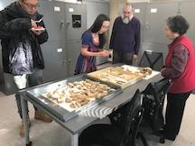
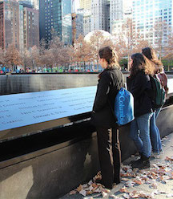
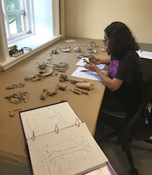

Celebrating the HABLab
CIAMS Congratulates the HABLab's Grand Opening (8/30/2019)

Source:
CIAMS
Cornell's Institute of Archaeology & Material Studies celebrated the opening of the Human and Animal Bone Laboratory on August 30th, 2019. Attended by students and staff alike, special guests include two Senior Associate Deans of the College of Arts & Sciences: Ted O'Donoghue and Andy Bass. Prof. Nerissa Russell, Cornell's zooarcheologist, will help make the newly furnished lab a space for exploration and research in the broad field of Archaeology.
Uncovering NYC
Archaeology and the Big City (12/21/2017)

Source:
CIAMS
Human bones...are virtually the same no matter how long they’ve been buried.
-Professor Velasco
How are bones investigated in the modern world? What histories lie under the covers of the City that Never Sleeps? Professor Velasco's team of student-investigators take a field trip to several sites in New York City— ending with the 9/11 Memorial Museum— to learn about the role that archaeology plays in forensic studies.
Thinking Like Anthropologists
Dewitt Middle School Annual Career Day (12/13/2019)

The HABLab will be joining students at DeWitt Middle School at their Career Day on December 13th, 2019. "Archaeology and Forensic Anthropology: Using Science and History to Unlock the Secrets of Bones," will challenge students to think critically about the worlds of information found in bones. Students will take part in a multidisciplinary analysis, conducting invesigations that intersect History, Science, Forensics, and everything in between.